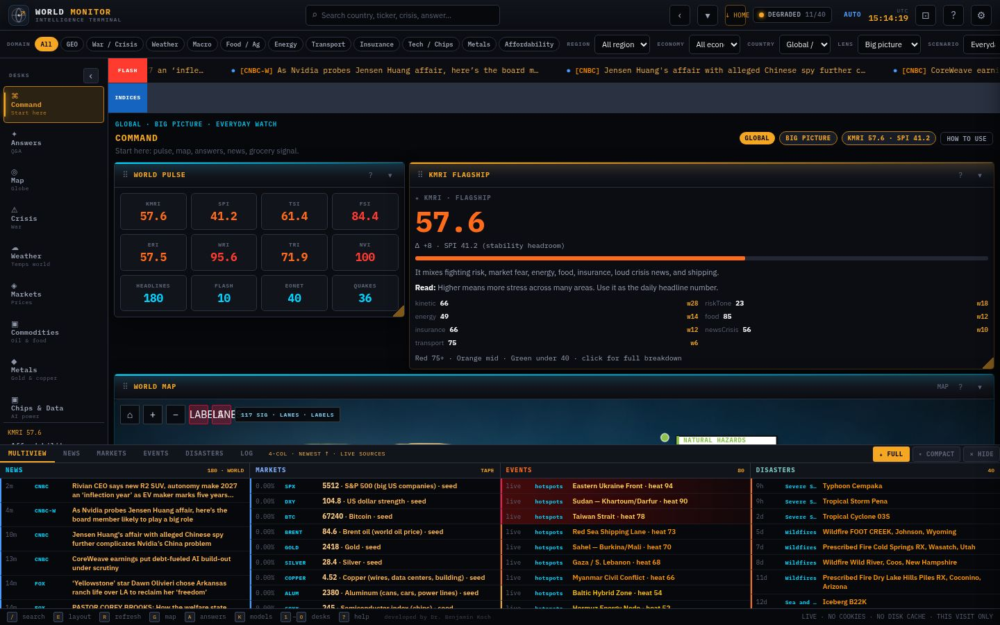

WEEKLYW46
The Weekly Read
€ TBD / month
- KMRI and suite, week over week
- Top 3 movers with plain-language read
- Elections and this-week calendar
- Friday 60-second brief
Command, Crisis, Markets, Food, Power · Net and more, one keystroke apart.
KMRI and fourteen companion indices, weighted and explained in plain language.
One-page reads that turn the signal into what it means and what to watch.
Weekly, monthly and quarterly editions in one unmistakable house style.
Wire headlines, prices, quakes, storms, outages and shipping chokepoints flow in live from open sources: news RSS, Yahoo quotes, CoinGecko, FX, USGS, NASA EONET and Open-Meteo.
Kinetic tension, macro fear, food and energy stress, insurance tone and transport friction are fused into composite scores, led by the Koch Macro Resilience Index.
Plain-language answers explain what changed, why it matters for prices and daily life, and which constructive paths remain open.
Open the terminal for the live picture, or subscribe to the weekly, monthly or quarterly report built from the same models.
Most screens show you what happened. WMT shows you how the pieces connect: food prices and storms, chips and copper, a strait and your grocery bill.
Definitions and weights below come straight from the terminal. Live values are computed in your browser when you open WMT.
—
Scheduled national votes, with countdown and the WMT lens that will watch them. Dates per public election calendars; verify each against the official source.
Pick any place on Earth. WMT shows what passed overhead, what shook, what burned and which hotspot was closest, all in the last seven days, computed live in your browser.
02 / OR TRYEvery edition shares the WMT look: amber on ink, model scorecards, a one-page lead and a map of what moved.
Supply chain, procurement, treasury and security teams: chokepoints, commodities, insurance tone and country stress on one page.
Policy and resilience units: food security, energy, infrastructure integrity and election horizons, framed for briefing rooms.
Curious readers: what the world means for groceries, rent, fuel and travel, without the noise.
Custom model weights, private desks and bespoke briefings. Pricing on request.
Talk to us →